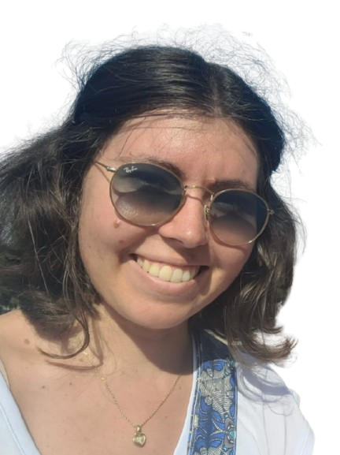
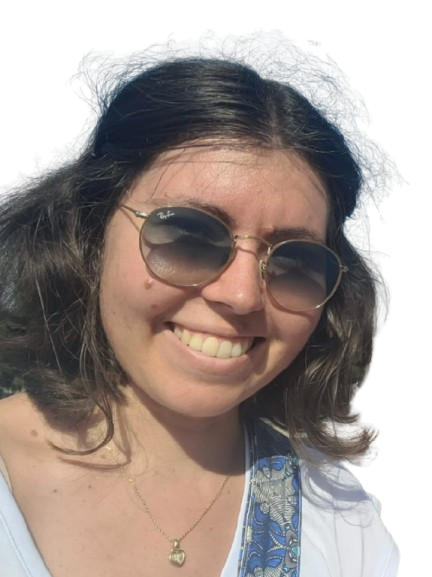
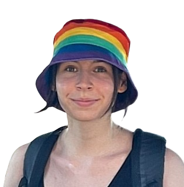
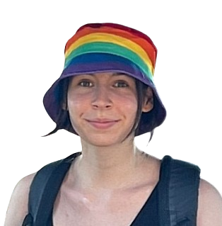

AMELIE
AMELIE
Labo: Icentre de biologie integrative (CBI), Laboratory for analysis and architecture of systems (LAAS) à Toulouse avec Magali Suzanne, Morgan Delarue, Wylie Ahmed, Tatiana Merle
Deciphering apoptosis mechanical signature using nanoparticle tracking
Insights Je cherche à distinguer des cellules au destin différent (apoptose ou survie) par l'encombrement macromoléculaire de leur cytoplasme, que je mesure via la diffusion de nanoparticules fluorescentes dans le milieu. Pour ce faire, j'étudie deux modèles, la patte de Drosophile au stade pupal et des cellules en culture. Le mechanisme d'apoptose est régulé par des forces de compression chez la Drosophile, tandis qu'une compression des cellules en culture augmente l'encombrement moléculaire, de sortes que je cherche aussi à faire le lien avec les forces de compression, en étudiant mes modèles dans différentes conditions. C'est très sympa, j'apprends plein de trucs, ça marche moyennement, le microscope est hs et la culture de cellules c'est très aléatoire, bref tout va bien !">
  MARIE
 MARIE
Labo: : partnership between the Institut pour l'Avancée des Biosciences (IAB, Grenoble) and the Institut de Nanotechnologies de Lyon (INL) avec Fabrice SENGER (IAB) et Caterina TOMBA (INL)
Understand how epithelial tissues sense and respond to curvature by testing tools to create and measure curvature-driven responses in a biological system. "> ALEXANDRE B
Labo: Institut Jacques Monod à Paris avec Benoit Ladoux
Variation de la visco-élasticité intracellulaire au cours de la différenciation cellulaire
Insights J'étudie la rotation d'aiguille super-paramagnétique dans le cytoplasme de keratinocytes au cours de leur différenciation pour réaliser une mesure de la viscosité et de l'élasticité intracellulaire et j'en déduis les paramètres biologique et les paramètres physiques qui influent sur ces derniers."> NOHEILA
Labo: Jean Perrin à Paris avec Jean-Christophe Galas et Élie Wandersman
Les tissus biomimetiques par amplement de gouttes actives
Insights Pleins de bar à jeux qui ont le Gobbit, il y a le MEILLEUR bubble tea de tous les temps que je ferai goûter à tous ceux qui viennent"> JULIE P
Labo: ICM à Paris avec Nicolas Renier
Effets de la gestation sur le réseau vasculaire cérébral
Insights On fait de la transparisation de cerveaux de souris puis on les scanne au microscope light sheet c’est long mais assez stylé. Ensuite bcp de scripts python qui bugue et c’est un peu chiant parfois. Ce que je préfère c’est visualiser les images des cerveaux entiers c’est trop beau
"> ALEXANDRE C
Labo: Laboratoire d’Hydrodynamique (LadHyX) à Paris avec Julien Husson
Mechanics of T lymphocytes
Insights Je m’amuse à compresser des lymphocytes T avec des billes, à mi chemin entre théorie et expérimental. Le laboratoire est tout neuf et le campus est génial. ">
 CAMILLE
CAMILLE
Labo: ICS à Strasbourg avec Pierre Muller et Thierry Charitat
Tribology of phospholipide layer: velocity profile characterization
Insights:
 ">
THIERRY
">
THIERRY
Voici un patchwork qui résume mes activités pendant cette période un peu particulière. Suite à ma chute sur le verglas tout début février j'ai été immobilisé 2 mois. J'en ai profité pour compléter ma série de photos de l'église St Maurice place Arnold (vue depuis ma fenêtre....). Et depuis quelques semaines je reprends progressivement les balades sur les sentiers de randonnée où j'ai croisé deux jolis papillons...

">
 NATHAN
NATHAN
Labo: Laboratoire de bioimagerie et pathologie de Strasbourg avec Frédéric Przybilla
Sujet
Insights L'idée c'est de suivre le déplacement de particules dans un environnement 3d au lieux de 2d. Pour ça on peut utiliser une lentille cylindrique pour déformer la forme de la tache d'airy en une ellipse de forme différente suivant la position de la particule en fonction du plan focale permettant d'accéder a la position en Z. L'idée c'est de pouvoir faire des reconstruction de trajectoire sur des surfaces non plane comme des cellule non adhérentes. Les label que l'on utilise c'est des upconversion nanoparticle, qui permette de d'émettre dans le visible a partir de plusieurs photon dans infrarouge, ce qui permet d'éviter le problème d'autofluorecence et sont très stable terme d'intensité de luminescences."> EVAN
Labo: IGBMC à Strasbourg avec Daniel Riveline et Minchul Kim
Multiscale deformation in mice FDB muscle fibers contraction and correlation of potential sarcomeric architecture variability with RBM24 expression
Insights J'ai du apprendre à prélever les muscles ex-vivo (dissection) et essayer des techniques pour les stimuler : en micromanipulation et en électrostimulation. Pour le splice-effector j'ai fais de l'hybridation in situ d'ARN. ce que j'aime bien c'est que ce stage a permis d'apporter des méthodes et quelques pas dans l'étude de la variabilité dans l'espace des propriétés mécaniques et architecturales des fibres squelettiques. la simulation vient d'un papier fondateur de mon travail Rausch and al. 2020 : Measurement of Skeletal Muscle Fiber Contractility with High-Speed Traction Microscopy Tout est résumé ici :
">